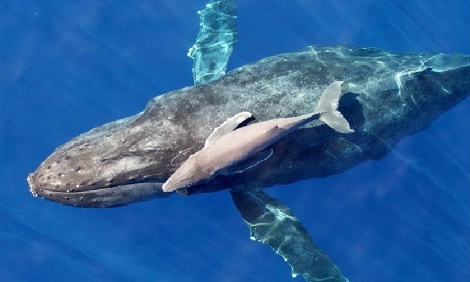

🐳Bem-Vindo à Nossa Missão: Protegendo Nossas Majestosas Baleias🐳

Quem Somos:
Nossa ONG é composta por uma equipe dedicada de pesquisadores, conservacionistas, educadores e apaixonados pelo
oceano. Juntos, trabalhamos incansavelmente para entender e proteger as diversas espécies de baleias que habitam os
vastos oceanos do mundo.
Nossa Missão:
Nossa missão é dupla: trabalhar para a conservação das baleias e seus habitats, e também para promover a
conscientização sobre a importância dessas criaturas maravilhosas para o equilíbrio ecológico global. Através de
pesquisa científica, advocacia, educação e ação direta, buscamos garantir um futuro sustentável para as baleias e
para todo o ecossistema marinho.
O Que Fazemos:
→Pesquisa e Monitoramento: Realizamos estudos de campo, coletamos dados e monitoramos populações de baleias em
seus habitats naturais para entender melhor suas necessidades e ameaças enfrentadas.
→Conservação e Proteção: Trabalhamos para criar e implementar políticas de conservação marinha, proteger áreas
críticas para as baleias e promover práticas sustentáveis de uso dos recursos marinhos.
→Educação e Conscientização: Desenvolvemos programas educacionais, materiais didáticos e campanhas de
sensibilização para informar o público sobre a importância das baleias e os desafios que enfrentam em um mundo em
rápida mudança.
→Ação Direta: Participamos de esforços de resgate e reabilitação de baleias encalhadas ou feridas, e também
colaboramos com outras organizações e governos para responder a emergências ambientais e prevenir danos futuros.
Como voce pode ajudar?
Você pode se juntar a nós nesta importante missão de proteger as baleias e os oceanos! Existem muitas maneiras de
contribuir:
→Doações: Sua generosidade nos permite continuar nosso trabalho vital de pesquisa, conservação e educação.
→ Voluntariado: Junte-se a nós como voluntário em nossos projetos de campo, eventos de conscientização e outras
atividades.
→Advocacia: Ajude a defender políticas e regulamentações que protejam as baleias e seus habitats, seja uma voz
em sua comunidade e entre seus representantes eleitos.
→ Educação: Compartilhe nosso conhecimento e recursos com sua família, amigos e comunidade, inspire outros a se
preocuparem com a conservação marinha.
→Juntos, podemos fazer a diferença para garantir um futuro brilhante para as baleias e para todo o nosso
precioso mundo marinho. Obrigado por se juntar a nós nesta jornada!